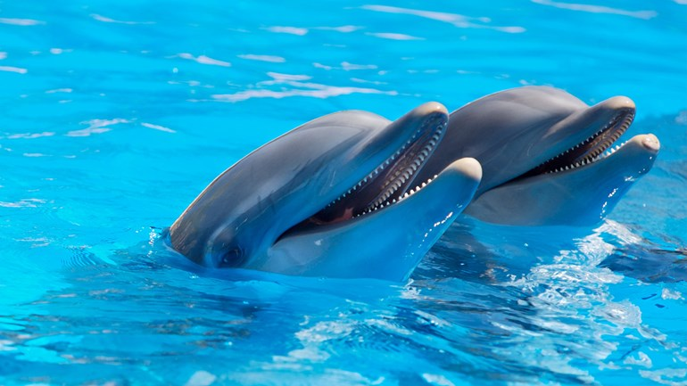

Dolfinarium Harderwijk is gewijd aan dolfijnen. Er zijn tien verschillende shows te zien met de dolfijnen en hun trainers. Na de show kan de bezoeker in de onderwaterruimte oog in oog staan met de dieren. Naast dolfijnen zijn er onder meer ook walrussen, bruinvissen, zeeleeuwen, zeehonden, roggen en haaien.
Klik hier voor de link naar: Dolfinarium
